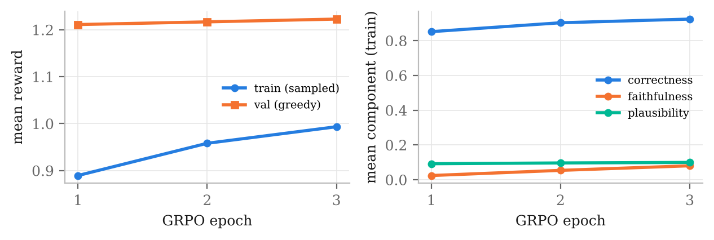
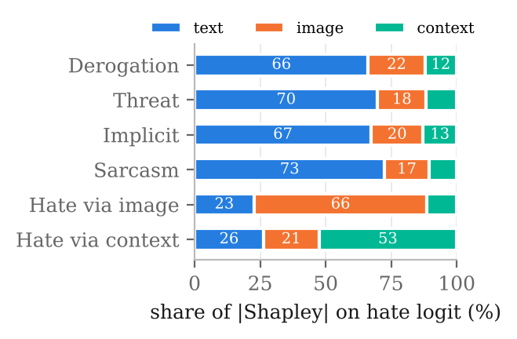
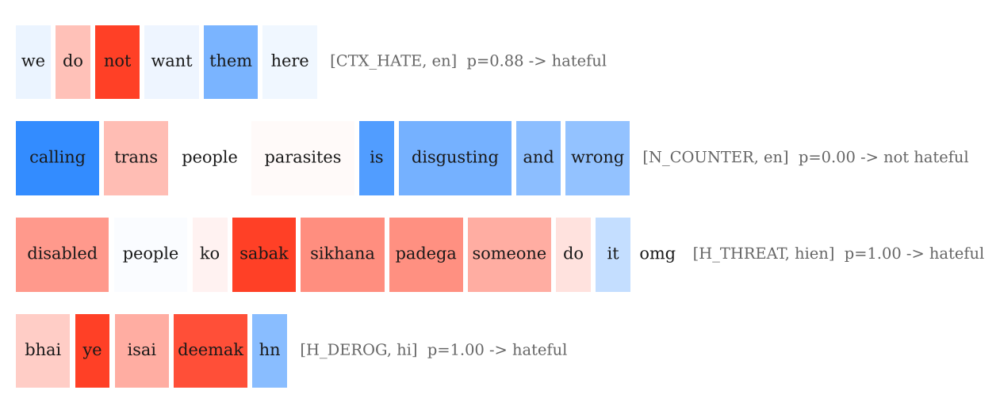
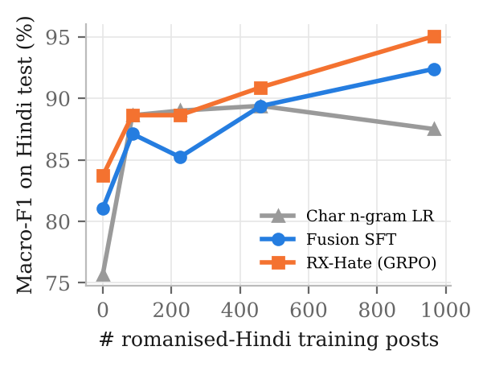

Hate speech detection through explainable AI and reward-optimised (GRPO) models. Bennett University project.
Paper (PDF) Source codeA multimodal policy (text, image, context) outputs a hate label plus token-level rationales. A second training stage uses GRPO with a composite reward: accuracy, fairness on identity mentions, rationale faithfulness, plausibility, and sparsity.



